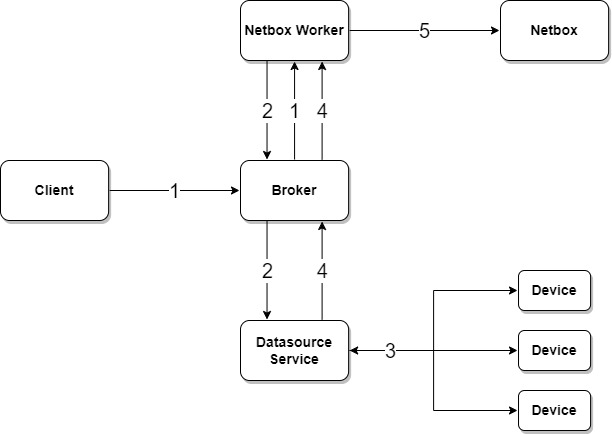

Netbox Sync Device Interfaces Task¤
task api name:
sync_device_interfaces
The Netbox Sync Device Interfaces Task synchronizes device interface configuration from live network devices into NetBox using a normalized desired/current state model and DeepDiff-driven reconciliation. The task computes an explicit action plan and applies interface create, update, and delete operations in a safe dependency order.
How It Works¤
The task follows a four-step pipeline:
- Fetch — Pull current interface state from NetBox for the target devices.
- Collect live state — Run a Nornir
parse_ttpjob against the devices to collect real interface attributes (type, enabled, MTU, VLANs, VRF, mode, parent, LAG membership, etc.). - Diff — Normalize both sides to a common schema and compare using DeepDiff to classify each interface as
create,update,delete, orin_sync. - Reconcile — Apply changes to NetBox in dependency order to avoid constraint errors:
- Create LAG interfaces first
- Create parent (non-child) interfaces
- Create child (sub)interfaces referencing their parents
- Bulk update changed interfaces
- Delete interfaces present in NetBox but absent in live data (only when
process_deletions=True)

- Client submits an on-demand request to the NorFab Netbox worker to sync device interfaces
- Netbox worker sends a job request to the Nornir service to fetch live interface data from devices
- Nornir service collects interface data from the network using
parse_ttp - Nornir returns normalized interface data to the Netbox worker
- Netbox worker applies planned actions and returns per-device action summaries and field-level diffs
Result Structure¤
Dry-run mode (dry_run=True) returns the diff plan without making any changes, keyed by device name:
{
"<device>": {
"create": ["Loopback99", "Port-Channel41"],
"update": {
"Ethernet1": {
"description": {"old_value": "old desc", "new_value": "new desc"}
}
},
"delete": ["StaleInterface"],
"in_sync": ["Loopback0", "Ethernet2"]
}
}
With Review — Pass with_review=True to use interactive NFCLI workflow. Sync task displays its preview, and waits for approval before applying changes. Declining at that point will return dry-run result.
Note
When both dry-run and with_review are True, dry-run logic ignored.
Live-run mode (dry_run=False, default) applies changes and returns a summary of actions taken:
{
"<device>": {
"created": ["Loopback99", "Port-Channel41"],
"updated": ["Ethernet1"],
"deleted": ["StaleInterface"],
"in_sync": ["Loopback0", "Ethernet2"]
}
}
In live-run mode res["diff"] is also populated with field-level change details for all interfaces that were created or updated.
Filtering¤
Interfaces can be scoped using glob patterns so that only a subset is considered on both the live and NetBox sides:
filter_by_name— match interface names, e.g."Loopback*"or"Ethernet[1-4]"filter_by_description— match interface descriptions, e.g."uplink*"or"TEST_SYNC_*"
Both filters are applied before the diff, so interfaces that do not match are completely ignored by the sync — they are neither created, updated, nor deleted.
Deletion Behavior¤
By default process_deletions=False — interfaces present in NetBox but absent in live data are left untouched. Set process_deletions=True to enable deletion. Child interfaces are always deleted before their parents to avoid foreign-key constraint errors.
Branching Support¤
The task is branch-aware and can push changes into a NetBox branch. The Netbox Branching Plugin must be installed. Specify the branch parameter; the branch is created automatically if it does not already exist.
Examples¤
Sync interfaces for a list of devices:
nf#netbox sync interfaces devices ceos-spine-1 ceos-spine-2
Preview changes without writing to NetBox (dry run):
nf#netbox sync interfaces devices ceos-spine-1 dry-run
Sync and delete interfaces absent from live data:
nf#netbox sync interfaces devices ceos-spine-1 ceos-spine-2 process-deletions
Restrict sync to loopback interfaces only:
nf#netbox sync interfaces devices ceos-spine-1 filter-by-name "Loopback*"
Restrict sync to interfaces whose description matches a glob pattern:
nf#netbox sync interfaces devices ceos-spine-1 filter-by-description "TEST_SYNC_*"
Sync interfaces into a NetBox branch:
nf#netbox sync interfaces devices ceos-spine-1 ceos-spine-2 branch sprint-42-interfaces
Sync using Nornir host filters instead of explicit device names:
nf#netbox sync interfaces FC spine
from norfab.core.nfapi import NorFab
nf = NorFab(inventory="./inventory.yaml")
nf.start()
client = nf.make_client()
# sync interfaces for specific devices
result = client.run_job(
"netbox",
"sync_device_interfaces",
workers="any",
kwargs={
"devices": ["ceos-spine-1", "ceos-spine-2"],
},
)
# dry run — preview creates/updates/deletes without writing
result = client.run_job(
"netbox",
"sync_device_interfaces",
workers="any",
kwargs={
"devices": ["ceos-spine-1", "ceos-spine-2"],
"dry_run": True,
},
)
# sync and delete interfaces absent from live data
result = client.run_job(
"netbox",
"sync_device_interfaces",
workers="any",
kwargs={
"devices": ["ceos-spine-1"],
"process_deletions": True,
},
)
# restrict sync to loopback interfaces only
result = client.run_job(
"netbox",
"sync_device_interfaces",
workers="any",
kwargs={
"devices": ["ceos-spine-1"],
"filter_by_name": "Loopback*",
},
)
# restrict sync to interfaces with a specific description pattern
result = client.run_job(
"netbox",
"sync_device_interfaces",
workers="any",
kwargs={
"devices": ["ceos-spine-1"],
"process_deletions": True,
"filter_by_description": "TEST_SYNC_*",
},
)
# sync into a NetBox branch
result = client.run_job(
"netbox",
"sync_device_interfaces",
workers="any",
kwargs={
"devices": ["ceos-spine-1", "ceos-spine-2"],
"branch": "sprint-42-interfaces",
},
)
# use Nornir host filters instead of explicit device names
result = client.run_job(
"netbox",
"sync_device_interfaces",
workers="any",
kwargs={
"FC": "spine",
},
)
nf.destroy()
NORFAB Netbox Sync Device Interfaces Command Shell Reference¤
NorFab shell supports these command options for the sync_device_interfaces task:
nf# man tree netbox.sync.interfaces
root
└── netbox: Netbox service
└── sync: Sync Netbox data
└── interfaces: Sync device interfaces with NetBox
├── timeout: Job timeout in seconds
├── workers: Filter worker to target, default 'any'
├── verbose-result: Control output details, default 'False'
├── progress: Display progress events, default 'True'
├── instance: Netbox instance name to target
├── dry-run: Return diff plan without pushing changes to NetBox
├── devices: List of NetBox device names to sync
├── process-deletions: Delete interfaces present in NetBox but absent in live data
├── filter-by-name: Glob pattern to restrict sync by interface name, e.g. 'Loopback*'
├── filter-by-description: Glob pattern to restrict sync by interface description
├── branch: Branching plugin branch name to push changes into
├── FO: Filter Nornir hosts using Filter Object
├── FB: Filter Nornir hosts by name using Glob Patterns
├── FH: Filter Nornir hosts by hostname
├── FC: Filter Nornir hosts by name containment
├── FR: Filter Nornir hosts by name using Regular Expressions
├── FG: Filter Nornir hosts by group
├── FP: Filter Nornir hosts by hostname using IP Prefix
├── FL: Filter Nornir hosts by names list
├── FM: Filter Nornir hosts by platform
└── FN: Negate the Nornir host filter match
nf#
Python API Reference¤
Synchronize device interface configuration from live devices into NetBox using a normalized state model and DeepDiff-based reconciliation.
The task follows a four-step pipeline:
- Fetch: Pull current interface state from NetBox (source of truth).
- Collect live state: Run a Nornir
parse_ttpget interfaces job against devices to collect live interface attributes (type, enabled, MTU, VLANs, VRF, etc.). - Diff: Compare normalized NetBox state against normalized live state using
DeepDiff to classify each interface as
create,update,delete, orin_sync. - Reconcile: Apply changes to NetBox in a safe order — LAG interfaces
first, then parent interfaces, then child (sub)interfaces, then updates,
and finally deletions (only when
process_deletions=True).
Side-Effects
- Sync interfaces task creates VRFs if they do not exist in Netbox
- Sync interfaces task creates VLANs if they do not exist in Netbox
Prerequisites
- Device must exist in Netbox
- If specified, vlan group must exist in Netbox
Limitations
- Sync interfaces task does not handles IP Addresses
- Sync interfaces task does not handles MAC Addresses
- Sync interfaces uses devices running configuration to pull interfaces data, interfaces operational state data not used
Dry-run mode (dry_run=True): returns the raw diff plan without making
any changes. Result is keyed by device name::
{
"<device>": {
"create": ["Loopback99", ...],
"update": {"Ethernet1": {"description": {"old_value": "x", "new_value": "y"}}},
"delete": ["StrayIface"],
"in_sync": ["Loopback0", ...]
}
}
Live-run mode (dry_run=False, default): applies changes and returns a summary
of what was done, keyed by device name::
{
"<device>": {
"created": ["Loopback99"],
"updated": ["Ethernet1"],
"deleted": ["StrayIface"],
"in_sync": ["Loopback0", ...]
}
}
In non dry-run mode res["diff"] contains difference detail
for interfaces that were (or would be) created/updated/deleted.
Parameters:
| Name | Type | Description | Default |
|---|---|---|---|
job
|
Job
|
NorFab Job object containing relevant metadata. |
required |
instance
|
str
|
The NetBox instance name to use. |
None
|
dry_run
|
bool
|
If True, no changes will be made to NetBox. |
False
|
with_review
|
bool
|
Preview changes, ask for review, then apply them. |
False
|
timeout
|
int
|
Timeout in seconds for the Nornir parse_ttp job. |
600
|
devices
|
list
|
List of device names to sync. |
None
|
process_deletions
|
bool
|
If True, delete interfaces present in NetBox but absent in live data. Defaults to False (safe by default). |
False
|
branch
|
str
|
NetBox branch name to use. The branching plugin must be installed. The branch is created automatically if it does not exist. |
None
|
filter_by_name
|
str
|
Glob pattern to restrict which interfaces
are included by name, e.g. |
None
|
filter_by_description
|
str
|
Glob pattern to restrict which
interfaces are included by description, e.g. |
None
|
update_type
|
(str, boolean)
|
update existing interfaces types or not,
sync interfaces task unable to fully resolve interface types and
defaults to interface type |
False
|
vlan_group
|
(str, int)
|
VLAN group name, slug, or ID to use when resolving interface VLANs. Missing VLANs are created in this group; otherwise they are created in the device site. |
None
|
**kwargs
|
Any
|
Additional Nornir host filter keyword arguments passed to
|
{}
|
Returns:
| Name | Type | Description |
|---|---|---|
dict |
Result
|
Per-device action summary. Structure depends on |
Source code in norfab\workers\netbox_worker\interfaces_tasks.py
767 768 769 770 771 772 773 774 775 776 777 778 779 780 781 782 783 784 785 786 787 788 789 790 791 792 793 794 795 796 797 798 799 800 801 802 803 804 805 806 807 808 809 810 811 812 813 814 815 816 817 818 819 820 821 822 823 824 825 826 827 828 829 830 831 832 833 834 835 836 837 838 839 840 841 842 843 844 845 846 847 848 849 850 851 852 853 854 855 856 857 858 859 860 861 862 863 864 865 866 867 868 869 870 871 872 873 874 875 876 877 878 879 880 881 882 883 884 885 886 887 888 889 890 891 892 893 894 895 896 897 898 899 900 901 902 903 904 905 906 907 908 909 910 911 912 913 914 915 916 917 918 919 920 921 922 923 924 925 926 927 928 929 930 931 932 933 934 935 936 937 938 939 940 941 942 943 944 945 946 947 948 949 950 951 952 953 954 955 956 957 958 959 960 961 962 963 964 965 966 967 968 969 970 971 972 973 974 975 976 977 978 979 980 981 982 983 984 985 986 987 988 989 990 991 992 993 994 995 996 997 998 999 1000 1001 1002 1003 1004 1005 1006 1007 1008 1009 1010 1011 1012 1013 1014 1015 1016 1017 1018 1019 1020 1021 1022 1023 1024 1025 1026 1027 1028 1029 1030 1031 1032 1033 1034 1035 1036 1037 1038 1039 1040 1041 1042 1043 1044 1045 1046 1047 1048 1049 1050 1051 1052 1053 1054 1055 1056 1057 1058 1059 1060 1061 1062 1063 1064 1065 1066 1067 1068 1069 1070 1071 1072 1073 1074 1075 1076 1077 1078 1079 1080 1081 1082 1083 1084 1085 1086 1087 1088 1089 1090 1091 1092 1093 1094 1095 1096 1097 1098 1099 1100 1101 1102 1103 1104 1105 1106 1107 1108 1109 1110 1111 1112 1113 1114 1115 1116 1117 1118 1119 1120 1121 1122 1123 1124 1125 1126 1127 1128 1129 1130 1131 1132 1133 1134 1135 1136 1137 1138 1139 1140 1141 1142 1143 1144 1145 1146 1147 1148 1149 1150 1151 1152 1153 1154 1155 1156 1157 1158 1159 1160 1161 1162 1163 1164 1165 1166 1167 1168 1169 1170 1171 1172 1173 1174 1175 1176 1177 1178 1179 1180 1181 1182 1183 1184 1185 1186 1187 1188 1189 1190 1191 1192 1193 1194 1195 1196 1197 1198 1199 1200 1201 1202 1203 1204 1205 1206 1207 1208 1209 1210 1211 1212 1213 1214 1215 1216 1217 1218 1219 1220 1221 1222 1223 1224 1225 1226 1227 1228 1229 1230 1231 1232 1233 1234 1235 1236 1237 1238 1239 1240 1241 1242 1243 1244 1245 1246 1247 1248 1249 1250 1251 1252 1253 1254 1255 1256 1257 1258 1259 1260 1261 1262 1263 1264 1265 1266 1267 1268 1269 1270 1271 1272 1273 1274 1275 1276 1277 1278 1279 1280 1281 1282 1283 1284 1285 1286 1287 1288 1289 1290 1291 1292 1293 1294 1295 1296 1297 1298 1299 1300 1301 1302 1303 1304 1305 1306 1307 1308 1309 1310 1311 1312 1313 1314 1315 1316 1317 1318 1319 1320 1321 1322 1323 1324 1325 1326 1327 1328 1329 1330 1331 1332 1333 1334 1335 1336 1337 1338 1339 1340 1341 1342 1343 1344 1345 1346 1347 1348 1349 1350 1351 1352 1353 1354 1355 1356 1357 1358 1359 1360 1361 1362 1363 1364 1365 1366 1367 1368 1369 1370 1371 1372 1373 1374 1375 1376 1377 1378 1379 1380 1381 1382 1383 1384 1385 1386 1387 1388 1389 1390 1391 1392 1393 1394 | |